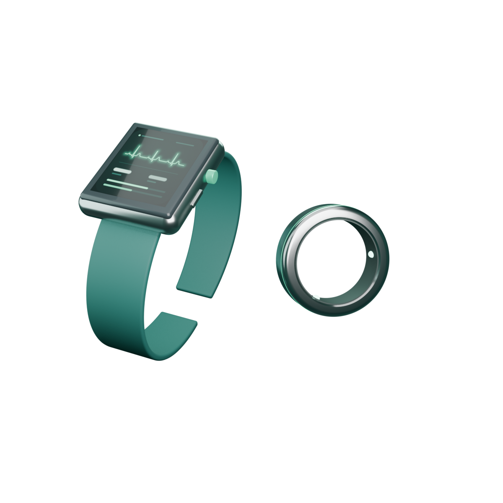
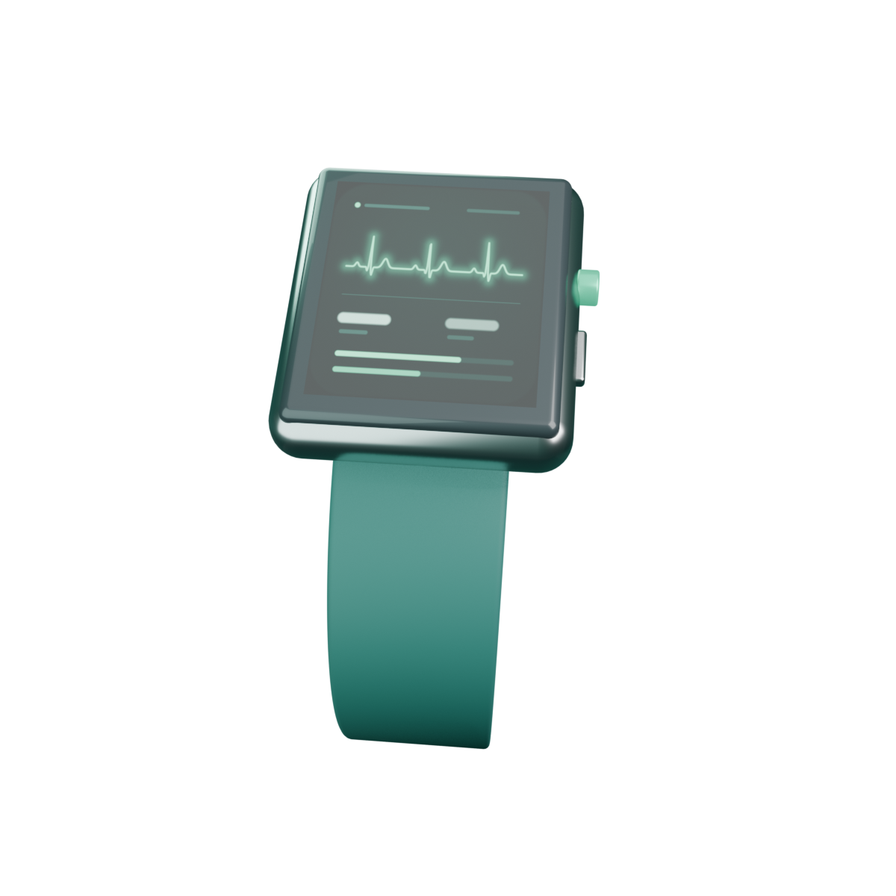
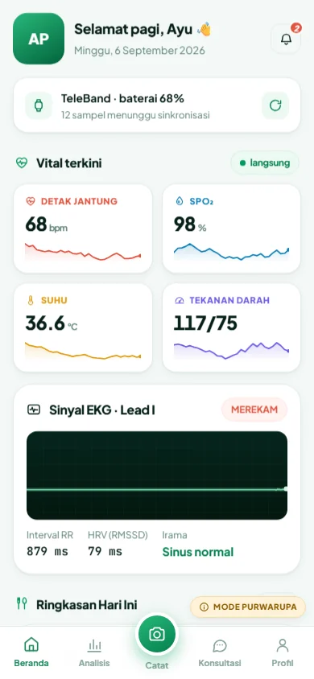
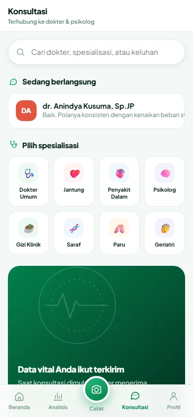

Prevalensi hipertensi pada penduduk berusia di atas 18 tahun berdasarkan pengukuran tekanan darah — sekitar satu dari tiga orang dewasa.
Riskesdas 2018, Kemenkes RI [1]TeleCare mengintegrasikan wearable TeleBand dan TeleRing dengan dashboard pemantauan terpusat — memantau detak jantung, SpO₂, suhu tubuh, sinyal EKG, dan estimasi tekanan darah secara berkelanjutan, lalu menghubungkannya langsung ke dokter dan psikolog.

Hipertensi, gangguan jantung, dan stres kronis berkembang bertahun-tahun tanpa keluhan. Institusi dengan populasi terkonsentrasi — perusahaan, pesantren, sekolah berasrama, dan panti jompo — memikul risiko terbesar karena pemeriksaan hanya berlangsung berkala dan manual.
Prevalensi hipertensi pada penduduk berusia di atas 18 tahun berdasarkan pengukuran tekanan darah — sekitar satu dari tiga orang dewasa.
Riskesdas 2018, Kemenkes RI [1]Kematian di Indonesia disebabkan penyakit tidak menular — sekitar tiga perempat total kematian, dengan penyakit kardiovaskular dan diabetes sebagai penyumbang utama.
WHO, profil PTM Indonesia [2]Hanya sebagian kecil yang pernah terdiagnosis tenaga kesehatan, jauh di bawah angka hasil pengukuran 34,1% — inilah celah deteksi yang hendak dipersempit.
Riskesdas 2018, Kemenkes RI [1]Pemicu yang menaikkan tekanan darah, mengganggu tidur, dan mempercepat progresi penyakit kronis — menjadi fokus pemantauan tahap awal TeleCare.
Fokus penelitian, bukan angka surveiSatu pengukuran per tahun tidak menangkap dinamika harian tekanan darah, ritme jantung, maupun beban stres. Tren yang bermakna klinis hilang di antara jeda pemeriksaan.
Satu tenaga kesehatan sering menangani ratusan karyawan, santri, siswa, atau lansia. Tanpa sistem triase otomatis, kasus berisiko sulit diprioritaskan.
Konsultasi dokter dan psikolog tidak selalu tersedia di lokasi, terutama pada pesantren dan panti jompo di luar pusat kota. Rujukan menjadi lambat dan mahal.
Model 3D di bawah dimodelkan secara prosedural di Blender dan dirender langsung di browser dengan Three.js — silakan putar, zoom, dan amati penempatan sensornya.
Dikenakan di pergelangan tangan dengan modul PPG empat kanal, elektroda EKG lead-I pada bezel, dan termistor kontak kulit. Ditujukan untuk pemantauan intensif harian pada karyawan dan lansia yang membutuhkan pengawasan lebih ketat.
Keduanya mengalirkan data ke dashboard yang sama. Perbedaannya terletak pada kelengkapan parameter, kenyamanan pemakaian, dan daya tahan baterai.

Parameter terlengkap termasuk EKG lead-I dan estimasi tekanan darah. Layar di pergelangan memberi umpan balik langsung kepada pemakainya.
Sinyal PPG dari arteri jari lebih stabil saat tidur dan nyaris tak terasa dipakai — cocok untuk pemantauan berkelanjutan tanpa mengganggu aktivitas.
Seluruh geometri, material, pencahayaan studio, dan animasi kamera dibangun lewat skrip Python di Blender, lalu dirender menjadi video yang ditanam langsung di halaman ini.
Bodi, bezel, tali, pod sensor, dan cincin dibangun dari primitif dengan bevel & kurva bezier.
Titanium metalik, keramik gelap, kaca transmisif, serta layar emisif berbasis node prosedural.
Empat area light — key, fill, rim hijau, dan top — dengan latar gradien sferis.
Video H.264 untuk halaman ini dan GLB teroptimasi untuk viewer Three.js interaktif.
Empat lapis: akuisisi di perangkat, agregasi di gateway, inferensi di cloud, dan tindak lanjut oleh tenaga kesehatan.
Health 5.0 menempatkan teknologi sebagai pendamping tenaga kesehatan — bukan penggantinya. TeleCare menyiapkan konteks, model menyaring kebisingan data, keputusan tetap di tangan manusia.
Morfologi PPG, interval RR, dan variabilitas denyut dinilai bersama agar variasi normal tidak tertukar dengan anomali yang bermakna klinis.
Setiap pengguna memiliki rentang normalnya sendiri. Ambang peringatan dibentuk dari riwayat individu, sehingga notifikasi palsu ditekan.
Status Normal, Waspada, dan Kritis mengarahkan perhatian petugas ke kasus yang benar-benar membutuhkannya lebih dahulu.
Setiap eskalasi berakhir pada dokter atau psikolog yang memutuskan tindakan — sistem menyiapkan bukti, manusia menetapkan langkah.
Pratinjau antarmuka pemantauan terpusat. Bila Realtime Database TeleCare berisi data, kartu di bawah akan mengikuti nilai sesungguhnya; jika tidak, simulasi fisiologis dijalankan.
Aplikasi web TeleCare menyatukan pairing perangkat, sinkronisasi data, pencatatan sesi harian, analisis tren, hingga konsultasi chat dan video call dengan dokter — berjalan di ponsel maupun desktop.


TeleBand, TeleRing, sabuk EKG, tensimeter, timbangan, dan patch glukosa terhubung ke satu riwayat — bukan enam aplikasi terpisah.
Perangkat tetap mengukur saat ponsel jauh. Sampel tertunda dipindahkan sekali ketuk ketika kembali dalam jangkauan.
Chat dan video call dengan dokter atau psikolog, dengan ringkasan vital dan catatan sesi ikut terlampir otomatis.
Potret makanan, koreksi hasil deteksi, lalu ikuti empat titik pengukuran hingga ringkasan kurva responsnya.
Purwarupa: nilai fisiologis disimulasikan dan balasan dokter dihasilkan otomatis.
Empat lingkungan dengan populasi terkonsentrasi, tanggung jawab kesehatan kolektif, dan kebutuhan pemantauan berkelanjutan.
Pemantauan kesehatan karyawan, deteksi dini beban kerja berlebih, dan penurunan risiko absensi akibat penyakit kronis.
Pengawasan kesehatan santri dalam asrama padat, deteksi cepat demam dan penurunan saturasi, serta dukungan psikologis.
Pemantauan siswa selama kegiatan akademik dan fisik, dengan perhatian khusus pada stres ujian dan pola tidur.
Pemantauan lansia dengan risiko kardiovaskular tinggi, notifikasi otomatis ke perawat saat parameter menyimpang.
Setiap pengguna didaftarkan ke unit institusi, lalu perangkat dikalibrasi terhadap pengukuran acuan agar estimasi tekanan darah dan suhu akurat secara personal.
TeleBand atau TeleRing merekam parameter vital sepanjang hari dan malam, mengirimnya ke gateway institusi lalu ke cloud TeleCare.
Model menilai tren HRV, ritme, saturasi, dan suhu untuk menghasilkan indeks stres serta status Normal / Waspada / Kritis per individu.
Kasus berisiko diteruskan ke dokter atau psikolog mitra melalui teleconsult dengan konteks rekam vital, lalu ditutup dengan rencana intervensi dan evaluasi.
Fokus awal: HRV, detak jantung istirahat, dan pola tidur dengan integrasi psikolog.
SpO₂, suhu, dan EKG lead-I aktif penuh dengan aturan eskalasi klinis.
Validasi PTT/PPG terhadap alat acuan pada populasi uji institusi.
Penerapan multi-unit dengan analitik populasi dan laporan kesehatan berkala.
Data vital terenkripsi saat transit, dipisah per unit institusi, dan hanya dapat diakses peran yang berwenang.
Pra-proses sinyal di perangkat menekan derau dan konsumsi bandwidth sebelum inferensi di cloud.
Fakultas Matematika dan Ilmu Pengetahuan Alam
Mengarahkan rancangan instrumentasi, validasi sensor, serta kerangka analisis sinyal fisiologis pada platform TeleCare.
Terbuka untuk kolaborasi riset, uji coba terbatas, dan diskusi penerapan bersama perusahaan, pesantren, sekolah berasrama, maupun panti jompo.